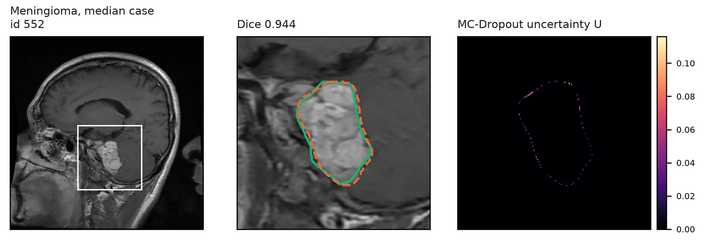
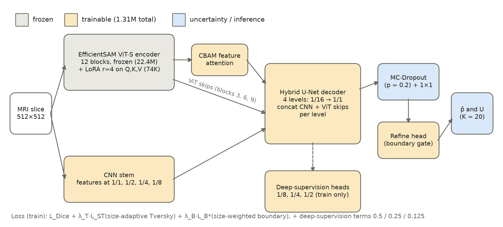
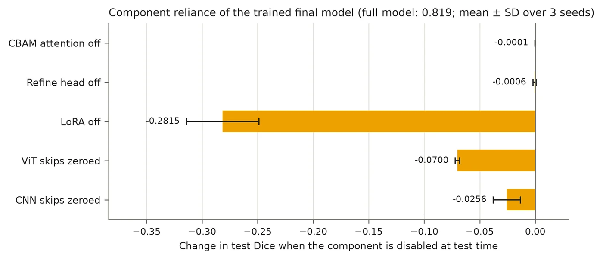
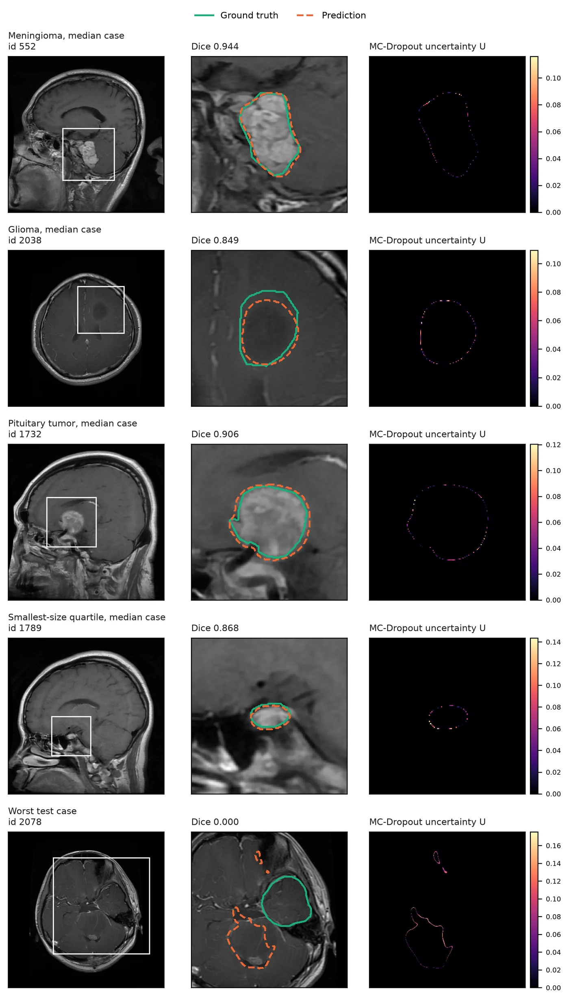
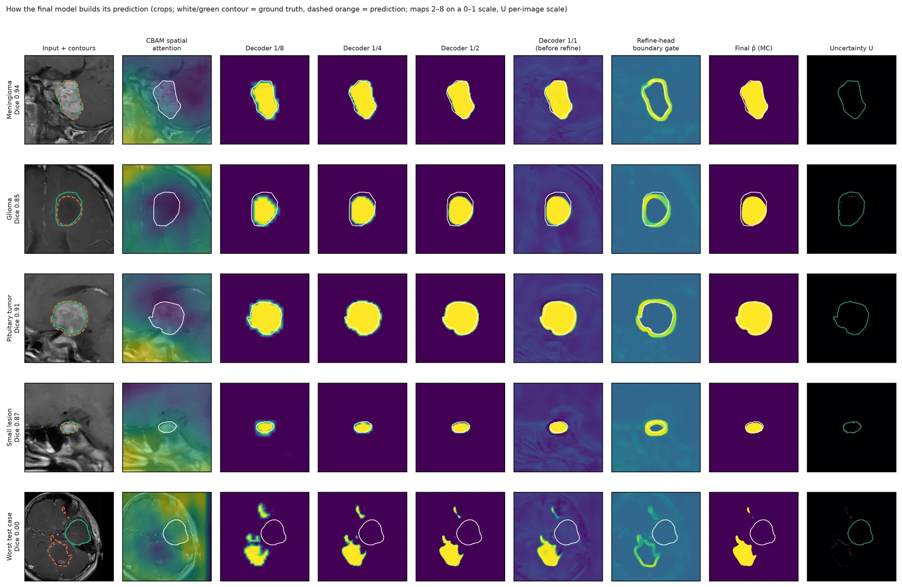
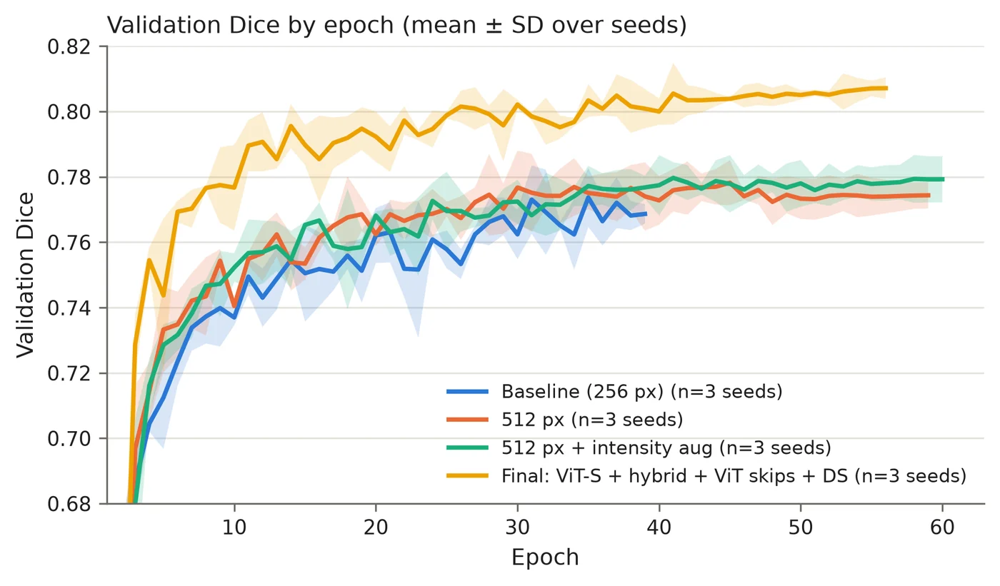

LoRA-EffSAM
Prompt-free brain tumor segmentation with a parameter-efficient EfficientSAM

- Test Dice, 3 seeds
- 0.819 ± 0.003
- With flip test-time augmentation
- 0.823 ± 0.003
- Trainable parameters
- 1.31 M of 23.7 M
- Prompts needed at inference
- none
Abstract
Foundation segmentation models such as the Segment Anything family are pretrained on natural images and need adaptation before they work on MRI. We adapt the EfficientSAM image encoder to brain-tumor segmentation with low-rank adaptation (LoRA) of its attention layers, keep the encoder frozen otherwise, and add a hybrid CNN–ViT decoder with skip connections from both a light convolutional stem and intermediate transformer blocks.
Training uses a size-adaptive, boundary-aware loss, and Monte Carlo dropout gives pixel-wise uncertainty. On the public Figshare brain-tumor dataset (3,064 T1-weighted contrast-enhanced slices, 233 patients), evaluated on a strict patient-level split, the final model reaches 0.819 ± 0.003 Dice over three seeds, and 0.823 ± 0.003 with flip test-time augmentation, against 0.780 ± 0.006 for a LoRA baseline.
An explainability analysis shows that the model relies on the LoRA adapters and the transformer skip connections but hardly on its two attention modules, and that MC-Dropout uncertainty localises boundary ambiguity but does not flag missed tumors.
Method

- Encoder
- EfficientSAM ViT-S, frozen, with LoRA (rank 4) on the query, key and value projections. That adds 74 K trainable parameters to 22.4 M frozen ones.
- Decoder
- A four-level U-Net that concatenates two kinds of skips at each level: features from a small CNN stem at 1/1 to 1/8 resolution, and features from transformer blocks 3, 6 and 9. Deep supervision at 1/8, 1/4 and 1/2.
- Loss
- Dice, plus a Tversky term whose weights adapt to lesion size, plus a size-weighted boundary term, so small tumors are not drowned out by large ones.
- Uncertainty
- Dropout stays on at test time. Twenty stochastic passes give a mean prediction and a per-pixel uncertainty map.
Results
Each step of the recipe adds Dice. Compare the four configurations, with or without test-time augmentation.
Mean test Dice with ± SD over 3 seeds, 477 test slices. The axis starts at 0.76 to make the steps legible.
The final configuration with TTA beats the baseline by 0.042 Dice (95% CI 0.032 to 0.053). Paired Wilcoxon test on 477 slices: p < 0.0001, better on 343 images and worse on 134. A seed-level paired t-test gives p = 0.011.
| Subgroup | Slices | Baseline | Final + TTA |
|---|---|---|---|
| All | 477 | 0.780 | 0.823 |
| Meningioma | 120 | 0.887 | 0.908 |
| Glioma | 222 | 0.696 | 0.750 |
| Pituitary | 135 | 0.824 | 0.866 |
| Smallest lesions (Q1) | 119 | 0.678 | 0.774 |
| Largest lesions (Q4) | 120 | 0.839 | 0.868 |
The split is by patient (165 train, 34 validation, 34 test patients), so no patient appears on both sides. Full tables, tests and caveats are in results/.
What the model relies on

Switching LoRA off costs 0.28 Dice, and zeroing the transformer skips costs 0.07. The CBAM attention and the refine head cost almost nothing when removed, so most of the gain comes from the adapted encoder and the transformer skips.
MC-Dropout uncertainty concentrates on tumor boundaries. It tells you where an edge is ambiguous, but it does not flag a tumor the model missed entirely: the worst test case below has Dice 0.0 and little uncertainty on the true lesion.
Cases and diagnostics



Run it
Linux or WSL2 with an NVIDIA GPU. Developed on an RTX 3060 12 GB with CUDA 12.6.
conda create -n lora-effsam python=3.12 && conda activate lora-effsam
pip install torch torchvision --index-url https://download.pytorch.org/whl/cu126
pip install -e ".[dev]"
bash scripts/fetch_efficientsam.sh # EfficientSAM code and weights
bash scripts/setup_data.sh # Figshare dataset, about 830 MB
lora-effsam verify-envSMOKE=1 bash scripts/run_pipeline.sh # 1-epoch check of the whole pipeline, about 5 min
bash scripts/run_pipeline.sh # final model, seeds 42/1/2, about 7 h on an RTX 3060
bash scripts/reproduce_results.sh # rebuild every table, statistic and figureEach stage is also a subcommand: lora-effsam train, evaluate, explainability and more. See the README.
Cite
@unpublished{amin2026loraeffsam,
title = {{LoRA-EffSAM}: Prompt-free brain tumor segmentation with a parameter-efficient {EfficientSAM}},
author = {Amin, Md. Fahim Bin and Khan, Israt Jahan and Juoairia, Adiba and Alam, Touhid and
Morol, Md Kishor and Liew, Tze Hui and Nandi, Dip},
year = {2026},
note = {Code: https://github.com/FahimFBA/LoRA-EffSAM}
}The dataset is from Cheng et al. (Figshare brain-tumor dataset) and the encoder is EfficientSAM. Please cite them too.